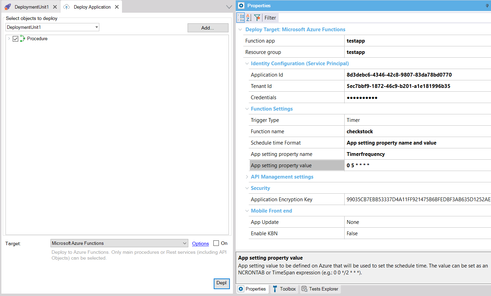

They are timed functions. One possible scenario is using them to update the merchandise inventory or the redundancies of a DB.
The Trigger Type property at the deployment unit should be "Timer" for this kind of functions.
To start, read How to: create a GeneXus procedure to be deployed as an Azure Function.
To deploy the function, use the deployment tool. See Deploy to Azure Functions.
The time can be configured using an Ncrontab expression, or a TimeSpan expression.
The GeneXus property to configure the cron Time is:
If the first option is selected, you have to configure:
Otherwise, configure the app setting name and value to be defined in the cloud, through the "App setting property name" and "App setting property value" properties. The app setting is automatically defined in the cloud by the deploy engine.

For more information see Azure Functions.
| Backlinks | |
| Toc:Application Deployment tool | Azure Functions |